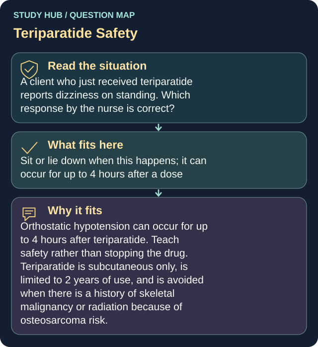

A client who just received teriparatide reports dizziness on standing. Which response by the nurse is correct?
Sit or lie down when this happens; it can occur for up to 4 hours after a dose
Orthostatic hypotension can occur for up to 4 hours after teriparatide.
Teach safety rather than stopping the drug. Teriparatide is subcutaneous only, is limited to 2 years of use, and is avoided when there is a history of skeletal malignancy or radiation because of osteosarcoma risk.
Why the other answers do not fit
- This is unrelated to your medication
- Stop the medication and call the clinic tomorrow
Teach safety rather than stopping the drug.
- Take the next dose with food to prevent this
Shared reasoning for choices without a separate note: Orthostatic hypotension can occur for up to 4 hours after teriparatide. Teach safety rather than stopping the drug. Teriparatide is subcutaneous only, is limited to 2 years of use, and is avoided when there is a history of skeletal malignancy or radiation because of osteosarcoma risk.
